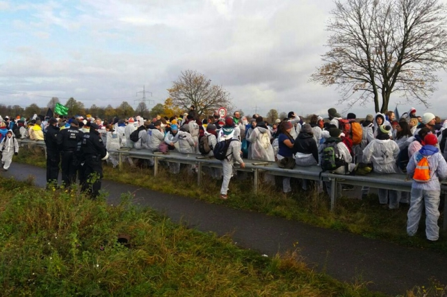

Davant l’escepticisme dels grups ecologistes, la COP23 se celebra a Alemanya a partir de dilluns amb l’objectiu de progressar en les pautes d’implementació de l’Acord de París establert el 2015
El proper dilluns comença la 23a Conferència de l'ONU sobre el canvi climàtic (COP23). Aquest any serà presidida per la República de Fiji, però per qüestions logístiques es celebrarà del 6 al 7 de novembre a la ciutat alemanya de Bonn. Polítics, sindicats, organitzacions no governamentals i grups mediambientals, associacions d’agricultors, grups indígenes, governs locals i investigadors participaran en els més de 800 esdeveniments que hi haurà al llarg de la cimera. Es preveu que als actes oficials organitzats per les Nacions Unides hi prendran part més de 30.000 persones.